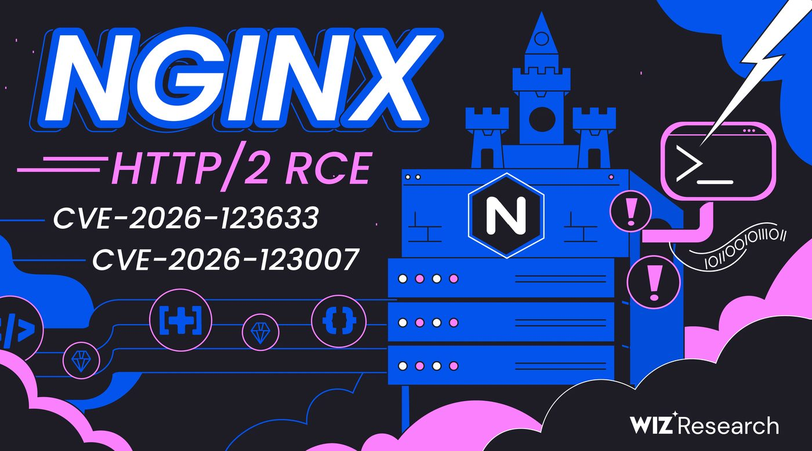
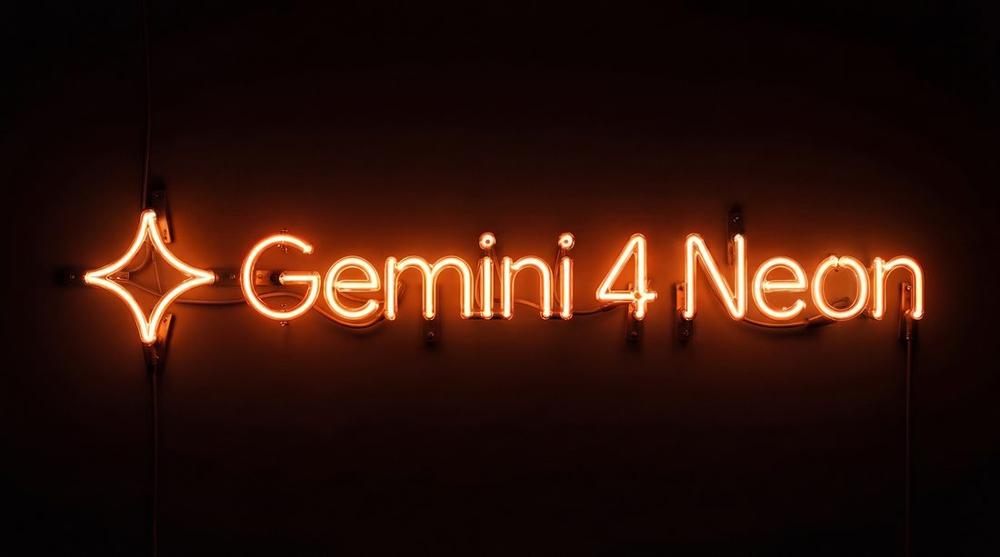
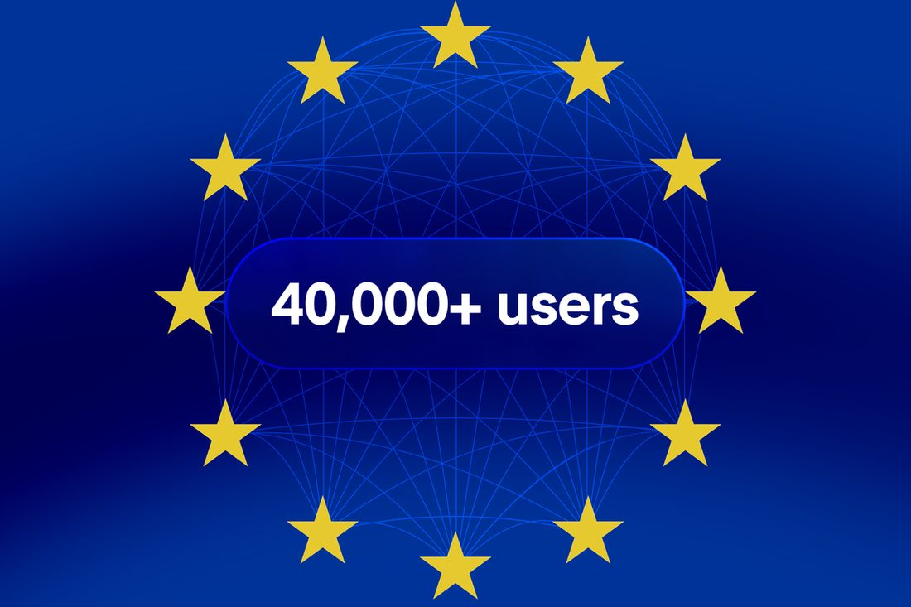
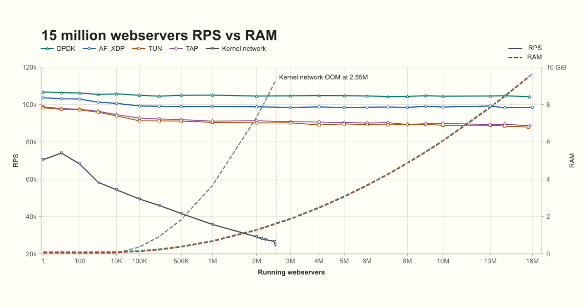
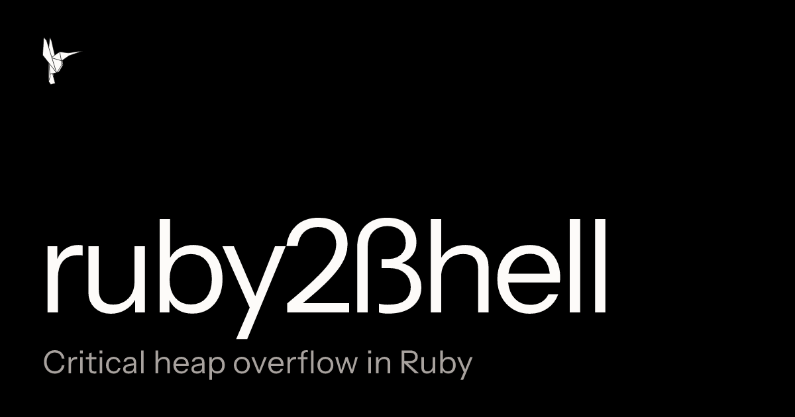
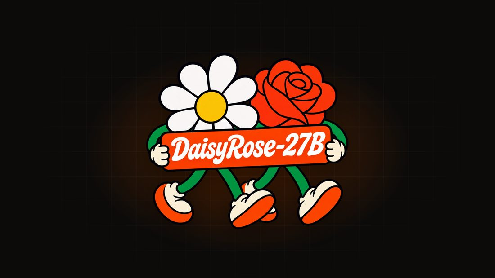

The front page, read closely and set in type — a briefing for Keegan
Compiled from news.ycombinator.comThursday, November 19, 2026Every fact checked; every joke earned
SecurityNGINX, day twoBoth HTTP/2 remote-code-execution flaws were patched within half an hour of Tuesday’s disclosure; the thread is now auditing the week the fix sat in the open-source repo.
Markets$83.00 for “ANT”Anthropic prices 980 million Class A shares — about $81.3 billion at the offer — and begins trading on Nasdaq this morning.
LanguageSeven Ruby bugsRegexp and string-case flaws, several with proven RCE PoCs, fixed in Ruby 4.0.10, 3.4.13 and 3.3.14; credits include Anthropic.
Field DeskBrussels on MatrixNine months from proof of concept to every Commission laptop: 40,000 staff on a messaging service the Commission runs itself.
Security Desk · Follow-Up
NGINX’s patched HTTP/2 RCEs hold the front page at 1,444 points on day two
Both flaws rated 9.2 under CVSS 4.0 need nothing but HTTP/2 switched on; one has shipped in default configurations since 2015, NGINX fronts more than 225 million websites, and the fix was sitting in the open-source repository for a week before anyone was told
Security Desk★ 1,444 pts · 609 comments · ▲ +543 since the last edition

Header image accompanying the Wiz disclosure. wiz.io
NEW YORK — Wiz Research — with Ikotas Labs, Metnir, Rapid7 and Xint, all of whom found the same bugs independently — reported two unauthenticated remote-code-execution flaws in NGINX: CVE-2026-123633, a use-after-free in HTTP/2 connection handling, and CVE-2026-123007, an integer underflow in HTTP/2 flow control that leads to an invalid memory copy. Both are rated 9.2, critical, under CVSS 4.0, and both were fixed in F5’s November 18 security release.[1][2] This paper carried the story at 901 points yesterday afternoon; it has added 543 since.
The reach is what keeps it on the front page. Exploitation requires no authentication and no bug in the site behind the proxy — only HTTP/2 enabled. Wiz demonstrated code execution on an NGINX serving ordinary static files over HTTPS on 64-bit systems, with memory-safety mitigations such as ASLR offering no protection; CVE-2026-123007 affects versions from 1.9.5, released in 2015, in default configurations, while CVE-2026-123633 hits reverse-proxy setups from 1.19.7 when connection slots run low.[1]
The thread’s sharpest finding is about the clock, not the code. One reader noted that the fix landed in the open-source repository roughly a week before disclosure, in a commit message crediting “Xint.io” — a heads-up for anyone who diffs such repositories for a living — and that the interim mitigation is as simple as disabling HTTP/2.[2] Another counted a 16-day head start available to anyone scanning certificate-transparency logs for the disclosure’s marketing site. The loudest worry is the long tail of small operators: “there’s got to be thousands who are too small time to wipe and reinstall.”[2]
AI Desk · Follow-Up
Gemini 4 Neon is the day’s most-discussed story, and the argument is the name
Google’s new model ranks #3 overall on the Artificial Analysis index at $3 per million input tokens; the thread’s top complaint is mapping eight model names to eight jobs
AI Desk★ 900 pts · 709 cmts · ▲ +768 since the last edition

Announcement header image. blog.google
Gemini 4 Neon, announced November 18 by Google DeepMind’s chief AI architect Koray Kavukcuoglu, ranks third overall on the Artificial Analysis Intelligence Index with a score of 61 at its top “xhigh” thinking level — the post concedes it lands “just behind larger, slower models” — and second on the Vals Index (70.9 percent).[3] It is priced at $3 per million input tokens and $15 per million output tokens, with a one-million-token context window and cached input at a 95 percent discount; Google claims a 32 percent lower cost per task than Gemini 4 Carbon and 50 to 80 percent lower than competing frontier models.[3] Yesterday’s paper caught it at 132 points, hours old; it has added 768.
The comment thread, now the day’s largest, spends most of its energy on taxonomy: “most of the world is trying to map Sol, Astra, Neon, Opus, Fable, Mythos, Carbon, Haiku,” as the top-voted comment puts it. One reader built a table assigning each name a size class across Google, Anthropic and OpenAI; an Artificial Analysis employee added that Carbon remains Google’s long-horizon model even where Neon scores higher overall, so “picking a model will only get more difficult from here.”[4] Several readers still rate Anthropic’s Opus 5.5 ahead in day-to-day use: “Opus feels like human level intelligent … while GPT and Gemini feel like I’m talking to an AI.”[4]
Field Desk · Markets
Anthropic prices at $83; “ANT” begins trading today
980 million Class A shares — 956.4 million from the company, 23.6 million from selling stockholders — plus a 147-million-share option for the underwriters
Field Desk★ 304 pts · 573 cmts
Pricing announcement image. anthropic.com
Anthropic, PBC priced its initial public offering at $83.00 per Class A share on November 18, with trading on the Nasdaq Global Select Market under the symbol “ANT” expected to begin today, November 19, and the offering to close November 20.[5] Of the 980,000,000 shares, 956,351,354 are sold by Anthropic itself and 23,648,646 by selling stockholders, from whom the company receives nothing; underwriters hold a 30-day option for up to 147,000,000 more shares.[5]
The thread did the arithmetic the prospectus leaves out. One reader noted the deal priced above its reported $70–78 range with 20 percent more shares than planned — “the rumor is they were oversubscribed by more than 6 times over,” against 3.5 to 4 for SpaceX — and another flagged that employees may sell immediately, “not a good sign” in his view. A third put the implied market capitalization near $1.5 trillion for a company founded in 2021, “a valuation not achieved by Apple until 2020.”[6] The bears reached for 2000: “Anthropic and OpenAI are the AltaVista of the AI era.”[6]
“ANT,” by the Numbers
Offer price, per share
$83.00
Shares offered
980,000,000
Gross size at the offer
≈$81.3B
Underwriters’ 30-day option
+147,000,000
Nasdaq debut under “ANT”
Nov 19, 2026
Expected close
Nov 20, 2026
Language Desk
Ruby patches seven Regexp and case-conversion flaws; PoCs prove RCE
Fixes ship in Ruby 4.0.10, 3.4.13 and 3.3.14; the credits list Stephan Lipp of Ada Logics — and Anthropic
Language Desk★ 300 pts · 110 cmts
Ruby’s maintainers released fixes for seven vulnerabilities in the regular-expression engine and in string case conversion on November 18, advising an immediate upgrade to Ruby 4.0.10, 3.4.13 or 3.3.14. “We are aware of PoCs that prove some of them can be used to trigger remote code execution,” the advisory states; CVE identifiers have been requested but were unassigned at publication, so the flaws carry GitHub Security Advisory identifiers instead.[7] Ruby 3.2 and earlier are end-of-life and will not be patched.[7]
The advisory’s core is GHSA-34m4-m9fh-gqp5, a one-byte heap buffer overflow in case conversion. A widely discussed thread comment reconstructs the mechanism: Windows-1252 encodes the German sharp s (ß) but has no uppercase form, so upcasing produces “SS” — one byte longer than the input — and “if the last character of a string you upcase is ß, it looks like you get a one-byte overflow (of ‘S’).”[8] The same thread noted the byline of the times: several of the seven were reported by “Stephan Lipp (Ada Logics) and Anthropic,” i.e., found with AI assistance.[7][8]
Field Desk · Brussels
European Commission runs Matrix for 40,000 staff, nine months after proof of concept
A sovereign Element deployment on EU Login and tendered sovereign clouds; federation remains undecided, and live presence had to be switched off
Field Desk★ 265 pts · 111 cmts

Image from Element’s conference write-up. element.io
The European Commission went from a Matrix proof of concept in December 2025 to a chat service on every Commission laptop by September 2026; more than 40,000 staff now use the tool, built on Element Server Suite and operated by the Commission itself on sovereign-cloud providers chosen through this year’s hosting tender, with sign-in through the existing EU Login.[9] Officials defined “sovereignty” along five axes — resilience, vendor diversity, data control, platform ownership, and procurement leverage — and say federation with outside servers is still “under assessment,” a governance question more than a technical one.[9]
Scale brought trade-offs the Commission admitted at the Matrix Conference: staff on different Synapse homeservers initially could not find each other, and the real-time presence indicator was disabled outright once load began to bite.[9] The Hacker News thread was harsher than the officials: it quoted Commission users calling the tool unusable in earlier reports, one commenter calling Matrix’s encryption “a tire fire,” and another pitying 40,000 people verifying new devices.[10]
Hardware Desk
One VM runs 15 million web servers on a userland network stack
smoltcp plus DPDK and AF_XDP move TCP/IP out of the kernel; sandboxed guests share one host process in what the author calls “our own micro OS”
Hardware Desk★ 246 pts · 28 cmts

The post’s benchmark card. kapteko.com
The engineering post walks the failure path first: 15 million ordinary server processes exhaust Linux’s ephemeral port range (32,768 through 60,999) and then memory itself, so the author indexed each listener to its own IP from a 10.64.0.1 base and sandboxed every guest with LFI — loading them all into one host process, replacing syscalls with a host handler, and scheduling them as a self-built micro OS.[13] Networking then left the kernel entirely for smoltcp, the Rust event-driven TCP/IP stack that needs no heap allocation, driven through DPDK and AF_XDP; an active connection costs about 5KB, an idle one about zero.[13]
The 28-comment thread is largely applause, with one kernel-architecture debate (“maybe Linux finally becomes a microkernel,” answered that this is closer to an exokernel) and one reader noting the servers all reply “OK” regardless of which site you asked for — virtual hosting being the next problem the stack does not solve.[14]
Security Briefing · Rails
One ß, one byte over: pre-authentication RCE demonstrated on stock Rails
Veria Labs shows the case-conversion overflow is reachable in default Rails and Sinatra; GitLab 19.6.0, GitHub Enterprise Server 3.22.5 and Chatwoot 4.20.0 bundle affected Rubies
Security Desk★ 237 pts · 92 cmts

Write-up header image. verialabs.com
Veria Labs’ “Ruby2ßhell” demonstrates that GHSA-34m4-m9fh-gqp5 — the one-byte ß-to-“SS” case-conversion overflow patched the same day in Ruby’s advisory — is reachable without authentication in Rails and Sinatra in their default configurations; plain Rack applications are not exposed by default.[15] The affected line runs longer than Ruby’s advisory suggests: every release back to Ruby 2.4.0 carries the bug, and at snapshot the latest GitLab (19.6.0, on Ruby 3.3.13), GitHub Enterprise Server (3.22.5, on 4.0.9) and Chatwoot (4.20.0, on 3.4.4) all bundled an unfixed Ruby; Mastodon 4.7.6, OpenProject 17.9.8 and Discourse’s base image were already fixed.[15]
The thread’s pointed observation is who is doing the drudgery: “the recent RCE wave seems to be people finding more single byte overflows and such, but reporting them as RCEs because AI can do the tedious grunt work of finding the rest of the vulnerability chain.”[16] Another reader reconstructed the bug’s biography: case conversion was written assuming it never changes a string’s length, and the ß mapping was added later without that audit.[16]
Security Briefing · Tooling
A reverse engineer’s workflow, handed to agents
Ghidra and radare2 driven through MCP bridges, with a written hypothesis log the author says stops agents from “going in circles”
Security Desk★ 264 pts · 67 cmts
A practitioner with two decades of hardware and software hacking describes pointing DeepSeek v4.1 Flash agents at binaries through a Ghidra MCP bridge and radare2, with every finding written to Markdown files so the notes survive context compaction and handoffs. The centerpiece is a “hypothesis debugging” loop: record a hypothesis in a CSV file, design an experiment that definitively proves or disproves it, log the result, repeat — the scientific method, applied because agents otherwise “go in circles.”[11]
The commentariat tested the margins. One reader found the big labs’ models refuse reverse-engineering work while DeepSeek objects only in Mandarin; another reported having Codex strip subscription checks out of Android apps; a dissenter argued the process is the point — “it’s through the process that you gain skills.”[12]
Practical Tech Corner · Hardware
SSD relief is a 2027 story; hard drives run into 2028
ComputerBase’s one-year tracker puts hard drives 134 percent above pre-crisis prices and SSDs 129 percent; Seagate’s data-centre capacity is allocated into 2028
Hardware Desk★ 165 pts · 139 cmts
The storage-crisis outlook, published by DriveVault — a company whose product catalogues the drives you already own — dates the turn precisely: SSDs “should start to ease in the second half of 2027” as NAND supply catches up per TrendForce, while hard drives stay expensive “probably into 2028” because Seagate has already sold most of its data-centre capacity and nobody is building factories.[19] ComputerBase’s monthly tracker of the same dozen drives since September 2025 supplies the damage: hard drives up 134 percent, SSDs up 129 percent; a Toshiba MG09 18TB went from €288 to €858, a Seagate IronWolf 4TB from €94 to €195.[19]
The thread’s most substantive comment reads the market instead of the shelves: Micron is growing revenue “well over +300%” year on year yet trades below ten times earnings, which “the market expects a collapse in their profits” — the same signal ROOFLES inverted, arguing manufacturers are refusing to build capacity precisely because they doubt AI demand lasts. On the shop floor the advice splits: buy if work needs it, wait if it does not, and favour SSDs, which should fall first.[20]
AI Desk · Training Floor
1,200 tasks and 18 days: DaisyRose-27B more than doubles its base model’s Terminal-Bench score
RadixArk’s first model — Qwen3.8-27B post-trained with the Miles RL framework on 144 H200s — lifts Terminal-Bench 4.1 pass@1 from 5.6 to 12.0 percent
AI Desk★ 236 pts · 88 cmts

Announcement header image. radixark.com
RadixArk, releasing its first model, reports training DaisyRose-27B on just 1,200 curated long-horizon tasks over 18 days on 144 H200 GPUs — 128 running the agent, 16 training it, asynchronously — for 63,000 GPU-hours. Each task chains interdependent problems with sessions up to 1M tokens and 1.5-hour sandbox attempts, and every task was designed against a specific mistake the base Qwen3.8-27B model makes; tasks passable without really solving them were removed on review.[17] The outfit claims 37 percent model-FLOPs utilization against 16 percent for the Megatron-based open-source trainer — 57 percent less GPU time — and about 944,000 sandbox runs across the project, peaking at 1,566 concurrent.[17]
The thread priced and prodded it. One reader put the compute at roughly $331,000 at spot rates; another asked what benchmark-maxing costs everywhere else; a third ran it against a private 86-task suite and scored it 2.5 points in 100 above a Qwen 3.8 fine-tune, “to determine if it’s benchmaxxing or actual improvement.”[18]
“Are we going to discover in a year that every server online this month had a rootkit installed? There’s got to be thousands who are too small time to wipe and reinstall.”A reader on the NGINX thread · [2]
Classifieds — Rates: 1 Karma per line
FOR SALE: 980,000,000 shares, Class A, one careful owner. Trades today, Nasdaq, as “ANT.” [5]
LOST: one byte, last seen leaving a Windows-1252 buffer during an upcase of ß. Known to travel with “S.” [7]
WAITING: hard-drive relief, contracted into 2028. Enquiries to Seagate’s order book. [19]
Box Score · Points per Story
The day in one line: a week-old NGINX fix commit drew more scrutiny than the disclosure itself; Anthropic priced roughly $81 billion of stock for a Thursday Nasdaq debut; Ruby patched seven memory bugs, some found with AI help; and Brussels moved 40,000 staff onto a messaging stack it runs itself.
Front Page Ledger
Stories typeset
10
Fresh stories
8
Follow-ups
2
Carried in digest
0
Combined points
4,361
Combined comments
2,526
Most-discussed
Gemini 4 Neon (709)
Security desks’ share
2,245 pts · 878 cmts
AI desks’ share
1,136 pts · 797 cmts
Corrections & Clarifications
“One server for every human being on the planet.” So says the kapteko post’s own subtitle. The post actually stands up 15,000,000 servers — one for roughly every 530 people alive. The demonstration concerns density on a single VM, not planetary coverage.[13]
Two Ruby stories, one bug family. “Pre-authentication RCE on stock Rails” is Veria Labs’ demonstration, not the Ruby advisory’s wording: Ruby’s bulletin says PoCs prove “some” of the seven flaws can trigger RCE “in some scenarios” and names no frameworks, while Veria shows one of them — the ß overflow — reachable in default Rails and Sinatra. Both front-page items trace to the same GHSA-34m4-m9fh-gqp5.[7][15]
“#3 overall” at a chosen setting. Google’s post ranks Neon third on the Artificial Analysis index at its top “xhigh” thinking level — two larger, slower models still rank above it — and its cost claims (32 percent under Carbon, 50–80 percent under rivals) are per-task comparisons at settings Google chose. An Artificial Analysis employee in the thread notes Carbon remains the long-horizon model regardless.[3][4]
“Prices will start going down” — gradually, in H2 2027, and not to 2024 levels. The article’s own summary: “a gradual slide, not a crash”; hard drives “probably into 2028”; “2024 prices are not coming back soon.” The outlook is also published by a vendor of drive-cataloguing software.[19]
Publisher’s Note
The NGINX flaws returned as the lead follow-up — 1,444 points, up 543 since yesterday afternoon’s paper — with Gemini 4 Neon close behind at +768 and the day’s largest comment thread. Eight fresh stories led with Anthropic’s $83 pricing for this morning’s Nasdaq debut. Two source pages needed a second URL to load (blog.google, ruby-lang.org) and both were recovered in full; no story was degraded, and the digest box stayed empty — nothing else earned a repeat.
— The Herald
Wiz Research, “Unauthenticated Remote Code Execution in NGINX: CVE-2026-123633 and CVE-2026-123007” — wiz.io
DriveVault, “When Will Hard Drive Prices Come Down? The Honest 2026–2028 Outlook” (citing ComputerBase, TrendForce, Seagate, Western Digital) — drivevault.io
Methodology: snapshot of the Hacker News front page taken at 14:00 UTC on Thursday, November 19, 2026, via the Algolia HN Search API (tags=front_page; 30 candidates returned). Points and comment counts are frozen at the snapshot and move afterwards. Deduplicated by story id against the previous four editions (manifest.json): eight stories are fresh; two returned as follow-ups, NGINX (+543 points, +60 percent since Tuesday’s 901) and Gemini 4 Neon (+768 from 132), each clearing the +40-percent-and-+150 bar. No digest was required and no second wire was used. Articles were fetched at publication time; two pages needed a corrected URL (blog.google, ruby-lang.org) and both loaded in full. Images are the stories’ own header images, credited to their hosts; no image was fabricated. Corrections & Clarifications items are drawn from today’s stories only.